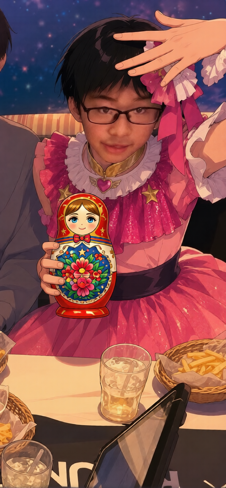

STORY
ある冬の日、胎児の子は「外の世界の音」をはっきりと意識した。
遠くで誰かが笑っているような声、規則正しく鳴り響く雑音、何か温かいものが動く気配。
その瞬間、暗闇の中で「この世界、もしかしたら楽しそうだな」と、初めて思った。
胎内から始まる物語。その視点で世界を見るアイドルプロジェクト。
※ 胎内の没入感を高めるため、音量を控えめにしてご試聴ください。

※画像は後日差し替え予定。現在は仮ビジュアルです。
胎児の子は、「生まれる前の視点」から世界を見つめるアイドルプロジェクト。
まだ何も知らない存在が、外の世界に興味を持ち、少しずつ歩み始める。
その過程を、音楽と物語で記録していく試みです。
| 名前 | 胎児の子（たいじのこ） |
| 誕生日 | 1月31日（予定日ではありません） |
| 趣味 | ゲーム（外の世界から漏れ聞こえる電子音を聴くこと） |
| 特技 | 羊水で水泳 |
| 好きなもの | マトリョーシカ（何層にも包まれている安心感） |
| 苦手なもの | 浅野（冷たい気配、鋭い金属の擦れる音） |
胎児の子のコンセプトは、「胎内の静けさ」と「外の世界への憧れ」の両立。
生まれる前の存在は、世界を直接見ることはできない。
しかし、母親の鼓動、羊水を伝うくぐもった音、断片的な情報だけで、外側を果てしなく想像し続けている。
ある冬の日、胎児の子は「外の世界の音」をはっきりと意識した。
遠くで誰かが笑っているような声、規則正しく鳴り響く雑音、何か温かいものが動く気配。
その瞬間、暗闇の中で「この世界、もしかしたら楽しそうだな」と、初めて思った。
1st Single「アイドル」
リリース日（設定）：11月21日
価格：￥1,310（税抜） / ￥1,441（税込・羊水税込）
規格品番：TJNO-0001 / Amniotic Fluid Records（胎内レコーズ）
【初回限定母体仕様】エコー写真風ピクチャーレーベル / 「浅野」立ち入り禁止ステッカー封入
M1. アイドル
自分自身が「アイドル」と呼ばれる存在になることへの違和感と、それでも誰かに見つけてほしいという矛盾した願いを抱えた楽曲。
「まだ生まれていない私は、嘘すらついていない。だからこそ、完璧で究極のアイドルなのだと思う。」
M2. GEMN
未完成なまま暗闇で輝こうとする存在を描いた楽曲。
「二重螺旋の暗闇。同じ場所で、分かたれたもう一つの光を夢見ている。」
M3. ファタール
避けられない変化と、抗えない宿命をテーマにした楽曲。
「狭い羊水の中で、私たちは最初から一つの席を奪い合う運命（ファタール）だった。」
M4. TEST ME
試されることへの戸惑いと、それでも前に進もうとする抵抗を描いた曲。
「外側の大人が、私を『検査（テスト）』しようとする。私を試すな、まだそこには行かない。」
2026.01：胎児の子、外の世界のノイズを意識し始める。
2026.02：マトリョーシカと出会う。入れ子構造の中に閉じ込められた自分自身を重ね合わせる。
2026.03：ファンの呼称が「迷える子羊」に決定。
2026.04：羊水の外で、誰かが「浅野」と呼ぶ冷たい声を検知。心拍が一時的に上昇。

・薄暗い部屋の中、モニターの淡い光だけが胎児の子の横顔を照らしている。
・マトリョーシカを両手でしっかりと抱え、何かを待つようにじっと見つめている姿。
「迷える子羊のみんなへ。暗い暗いこの場所から、みんなの声を聴いています。いつか生まれるその日まで、どうか私を見失わないで。」
Q：このサイトは本物の公式サイトですか？
A：設定上の公式サイトです。
Q：苦手なものに書かれている「浅野」とは誰ですか？
A：羊水の外側から、冷たく鋭い金属の道具を持って私に近づいてくる影です。その気配がすると、お腹の奥が痛くなり、私の心音がとても速くなります。近づけないでください。